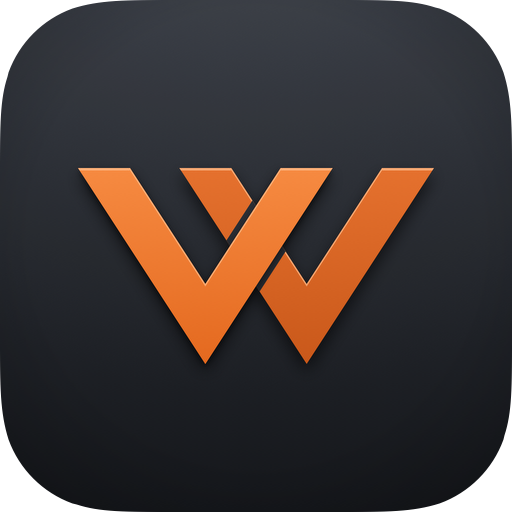

Support
Help with WarMOB, the independent iPhone and iPad app for Warcon panels. Can't find your answer here? Write to skidgaming101@gmail.com.
Getting started
- Install WarMOB on an iPhone or iPad with iOS 18 or later.
- On Add your Warcon panel, enter the address you open in your browser to reach your panel, for example
https://panel.example.com, and tap Check address. - When the app says Warcon panel found, tap Continue to sign in and sign in with your panel account.
- Your servers appear live. You can add more panels later from the Panels tab (Add a panel).
What you need
- A Warcon panel served over HTTPS with a certificate your device trusts (for example Let's Encrypt or Cloudflare). Plain
http://addresses and self-signed certificates aren't supported. - The panel reachable from your device: on the internet, or through your VPN.
- No extra login page in front of the panel (such as Cloudflare Access or Authelia).
- An account on that panel. WarMOB has no accounts or servers of its own: what you can see and do is what your panel's role for you allows.
Signing in
- Username and password: the same as on your panel's web page. If your account has two-factor sign-in, the app asks for the code from your authenticator app next (or one of your backup codes). "Trust this device for 30 days" skips the code next time.
- Discord or Steam: tap Sign in through the web page under the password form. Your panel's own sign-in page opens inside the app, as on the web, and offers Discord or Steam if your panel has them. You may have to sign in to Discord or Steam again: the page keeps nothing between attempts.
- Passkeys and security keys can't be used inside the app. Apple lets an app's web page use them only for websites tied to that app. Sign in to Discord or Steam with your password, and when you're asked to verify, choose another way (on Discord: Verify with something else, then an authenticator or backup code). If a passkey is the only way your account can verify, add another way on the provider's side, or set a password on your panel's Account page and sign in with it.
- Signed up with Discord, Steam or a passkey? Your panel account has no password until you set one on the panel's Account page. Until then, use Sign in through the web page.
Common problems
- "Warcon must be served over HTTPS." The address starts with
http://. WarMOB only connects over HTTPS. Put your panel behind HTTPS with a trusted certificate (a reverse proxy with Let's Encrypt, or Cloudflare), set the panel'sORIGINto the https address, and enter that. - "Can't reach the panel" mentioning a certificate (for example "The certificate for this server is invalid"). Your device doesn't trust the panel's certificate: it is self-signed, expired, or for another name. Use a certificate from a public authority for exactly the address you enter.
- "Not a Warcon panel" and "a sign-in page in front of the panel?" The address leads to a login page (Cloudflare Access, Authelia, a hosting provider's page) instead of Warcon. WarMOB has to reach Warcon directly: allow the panel's address through without that page, or reach it over your VPN.
- "Can't reach the panel" (no answer). Check the address, that the panel is running, and that your device can reach it: on mobile data a panel on your home network needs a VPN. Open the same address in Safari on the device to compare.
- "You're offline". Your device has no connection. The app shows what it last knew and is live again within seconds of the connection's return.
- "This address is not the one the panel is configured for". Enter exactly the address you open in your browser (the panel's
ORIGIN), with the same host name.
Removing your data
WarMOB keeps your panels, settings and sign-in on your device only (privacy policy). To remove everything:
- Sign out (Settings → Sign out) on each panel. This ends the session on your panel.
- Forget this device (Settings) also deletes your panel's "trusted device" cookie, so the next password sign-in asks for your two-factor code again.
- Remove each panel (Panels tab → the panel's menu → Remove…). This deletes its sign-in, recent broadcasts and cached features.
- Then delete the app. Deleting the app alone doesn't sign you out: iOS keeps the app's sign-in after the app is deleted, until it is installed and opened again. You can also end a session from your panel's Account page.
Contact
Questions, problems and feedback: skidgaming101@gmail.com. Tell us your iOS version and the app's version (Settings → About and licences) and what the app showed. Questions about your panel itself, your account or your servers go to your panel's owner.